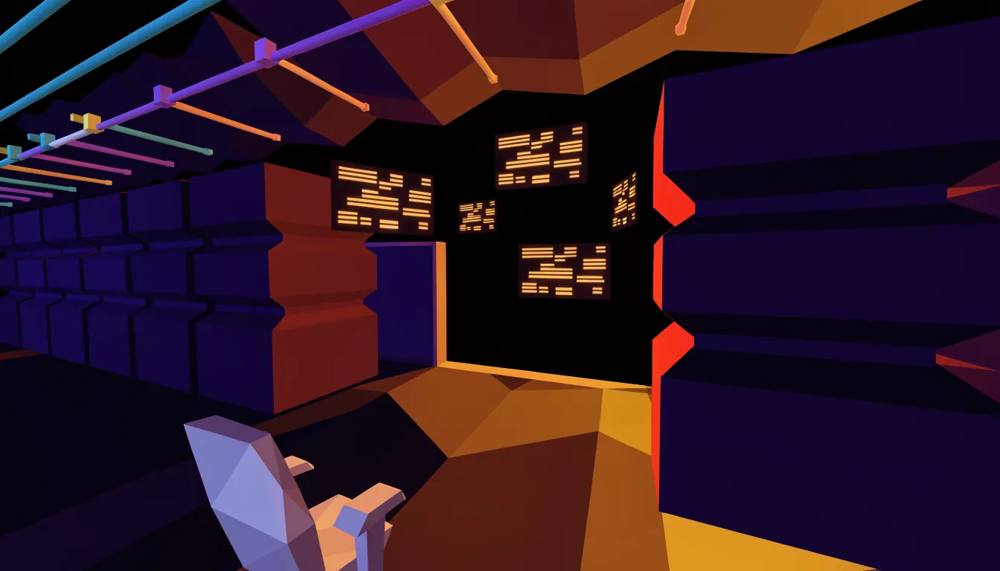
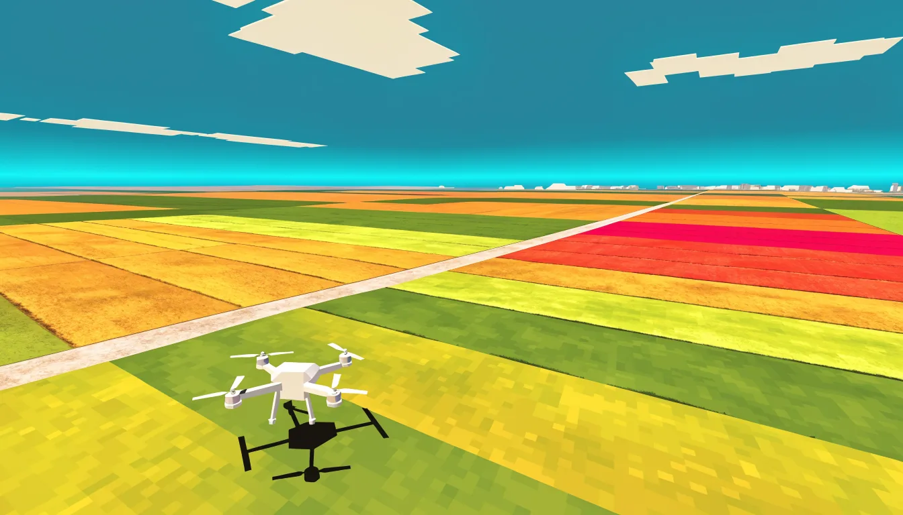
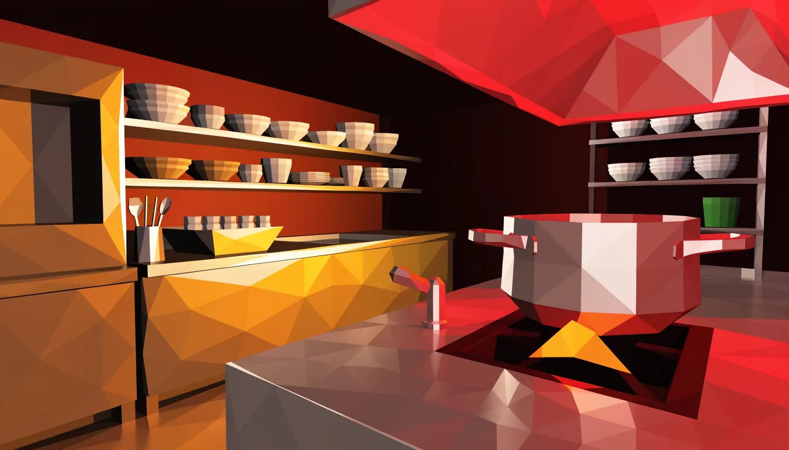

Aurelio Ochoa
Guayaquil, Ecuador
- Developer.
- Pilot.
- Cook.
All three are current. That is the whole point.
Code

Three years of things that stayed built.
Front-end, systems administration and cloud infrastructure. Sites and features running in production, Linux servers and databases kept alive, tests and deployments automated with Jenkins, Docker and Google Cloud Platform.
- Front-end
- HTML, CSS, Sass, JavaScript, React, Vue, Angular
- Back-end
- Node.js, Express, PHP, Laravel, WordPress, MySQL, MongoDB
- Systems
- Linux, Docker, Jenkins, Google Cloud Platform, CI/CD
- AI and agents
- Claude Code, OpenCode, agentic workflow design, daily
Shipped
-
Mediacor Plus
Built their corporate site, then the mail-server automations that deliver their media-monitoring subscriptions.
-
Publifyer
Features for Just Click Media's e-commerce platform, plus storefronts and the QA that kept them upright.
-
Universidad Europea del Atlántico
WordPress themes in PHP, Apps Script automations, then Jenkins pipelines and cloud infrastructure on GCP.
In the open
Ten public repositories, on a shelf. Pull one down and read its spine.
Sky

Since 2024 the office has been a field.
Precision spray missions over Ecuadorian farmland. Field mapping, route planning, and the maintenance and calibration that has to happen before any of it flies.
Your drone now.
It has been flying itself since you got here. Take it.
Your browser cannot run the drone, so it is sitting this one out.
- Certified UAS pilot DGAC Ecuador, 2025
- DJI Agras T50, T100 The airframes he flies
- Spanish, English, German Native, native-level, B2
Kitchen

In February 2026 he finished culinary school.
Culinary arts at the Escuela Culinaria de las Américas in Guayaquil. Not a hobby line on a CV. A finished program, and the same appetite for a process that has to work every single service.
Let's build something.
Code, a field, or a kitchen. The address is the same.
- Where
- Guayaquil, Ecuador
- Write in
- Spanish, English or German
jazzskull by Cathy Jarboe